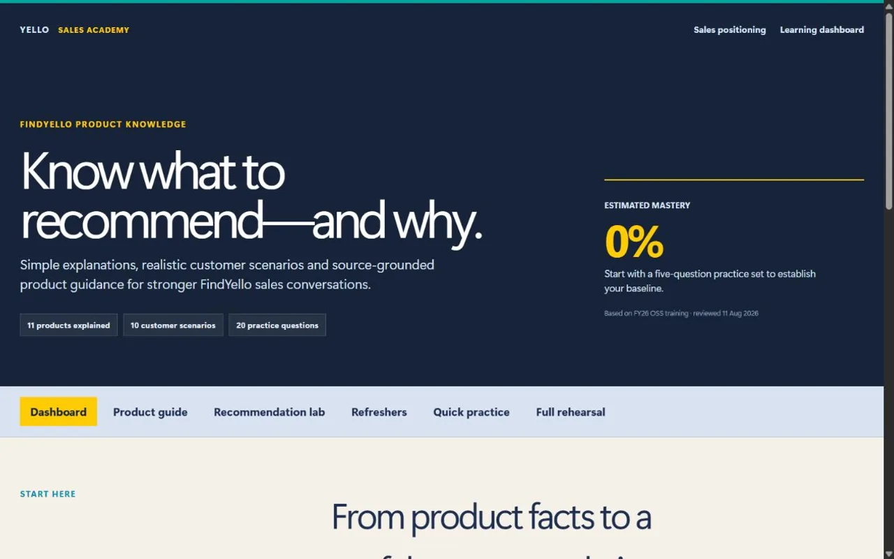

Websites for service businesses
Turn interest
into enquiries.
I build new websites and improve existing ones, with clear routes to calls and WhatsApp enquiries. Optional content and ads help people find you.
Already have a website?
Request a reviewBuilt with Kyle Hector.Based in Jamaica. Working internationally.
01 / Selected websites
See what that looks like.
Different services.
A clear next step for each.
Screenshot preview. Visit website to explore the full experience.
02 / How I can help
Start with what you need.
Build the website.
Then bring people to it.
Choose a service to see what’s included.
Your main service, made clear
Build a new website.
Improve the one you have.
Give visitors a clear view of your services and an easy way to get in touch.
- New website design and existing-site reviews
- Clear content and a thoughtful mobile experience
- Calls, enquiry forms, booking links and WhatsApp
Start with a review of what works and what needs improving.
Explore ongoing promotionReviews, website builds and ongoing promotion are scoped separately.
Give knowledge somewhere to go
Make training easier
to use.
Interactive guides, scenarios and short quizzes help your team explore information and put it into practice.
- Learning structure and content organisation
- Interactive training materials and prototypes
- Practice, feedback and refresher activities
Ongoing prototype, developed in my role at Yello Media Group.
Useful skills for everyday work
Get practical with AI.
At your team’s pace.
Hands-on sessions shaped around your work, your tools and your experience level.
- Content ideas, drafts and visual exploration
- Repeatable workflows for everyday tasks
- Checking outputs and applying human judgement
Optional ongoing promotion
Help more people find you.
Make it easy to get in touch.
Keep your business visible after launch, with content and ads that lead people to your website.
- Relevant people
- Your website
- Calls & WhatsApp
- Photos, posts or videos that show what you do
- Advertising on Google, Facebook or Instagram
- Review where interest and enquiries come from
Ongoing support is optional and quoted separately. Ad spend is additional.
How we measure enquiries
I’ll show you which posts and ads bring people to your site, and what they do next. A click on Call or WhatsApp shows interest; it doesn’t confirm a conversation.
Where tracking and your enquiry records allow, we also review completed calls or messages and their cost. We use that information to improve the next posts and ads.
How we start
Understand the need
Your business, audience and what needs to work better.
Agree the scope
Clear priorities and a quote, shaped around your goals and budget.
Create and review
Review the work together, refine it and agree the next step.

A look at interactive learning
Prototype / Work in progress
From product knowledge
to real practice.
FindYello Sales Academy brings product guides, customer scenarios and practice questions into one interactive learning experience.
My contributionConcept, learning structure, UX direction and AI-assisted development.
Explore the case study (opens in a new tab)Developed as part of my work at Yello Media Group. An in-progress prototype, with no rollout or performance claim.
03 / The person behind the work
You do what you do best.
So do I.
I’m Kyle Hector. I’ve invested in knowledge, production equipment and software to bring website design, content creation and paid advertising together.
You work directly with me, with fewer handovers and a practical approach shaped around your business and budget.
The cost of a website or getting noticed shouldn’t stand between you and your business goals.
A creative approach
Ideas, made useful.
Gather the possibilities.
Shape the right next step.
A woven net gathers a lightbulb, a photograph and a conversation bubble. The collected ideas settle into a website.
04 / Let’s make a useful next step
What are you
working towards?
Tell me about your business and what needs to work better. I’ll follow up to discuss the right scope.
Book a discovery callA free 15-minute conversation about fit and next steps.
Not sure what to ask for?
Can you update my existing website?
Yes. I can review how your site supports your business goals and identify improvements. We agree whether targeted updates or a new build make sense.
How much will my project cost?
That depends on the pages, content and features you need. We agree the scope and quote before work starts.
Can we work together outside Jamaica?
Yes. I work remotely with service businesses internationally. We agree communication and meeting times at the start.
Tell me a little about it.
A few details are enough to start.